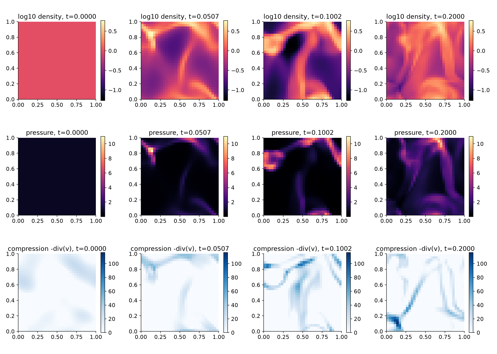
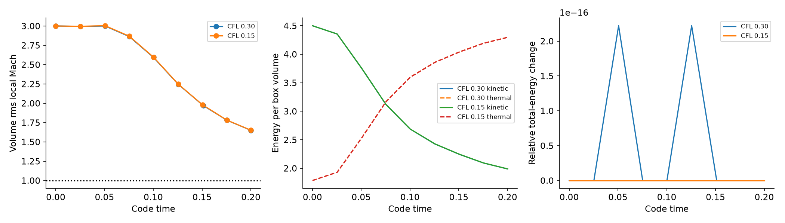
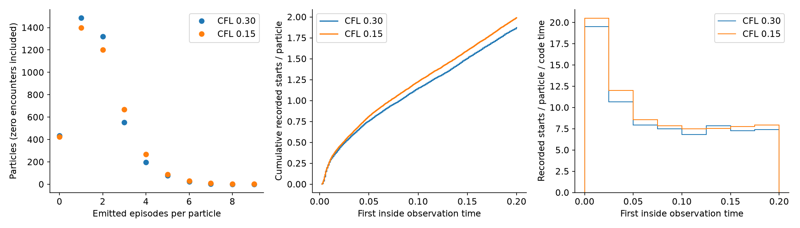
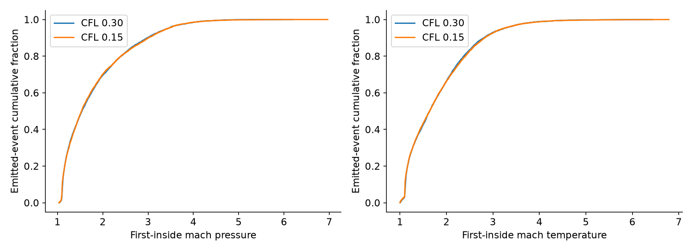
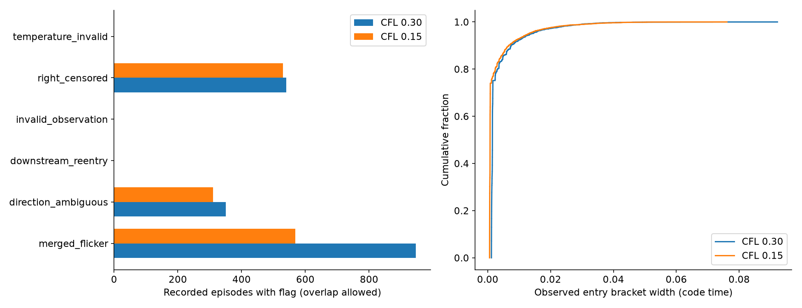

box slices
Real z=0.515625 slices of the 32^3 box. Each row shares a color scale across times; compression is not the detector mask.

32³ cells, 4096 mass-seeded MC tracers, ideal gas gamma=1.4, periodic box, t=0.2. No forcing or cooling. Scientific sign-off pending.
baseline: 7123 complete, 0 partial, 540 suspended; 3661/4096 particles have emitted episodes; mean 1.739 emitted episodes per particle.
half_cfl: 7623 complete, 0 partial, 530 suspended; 3672/4096 particles have emitted episodes; mean 1.861 emitted episodes per particle.
Exact equality of all saved double conserved volumes and sampled native particle records.
One realization, short low-resolution decaying run; not steady driven turbulence. CFL change affects the fluid solution, MC random draws and detector sampling jointly. Episodes, first-inside strengths and reentries require scientific qualification. All episodes retain no_plateau/cadence flags; open episodes remain right-censored. No independent truth shock catalogue, recall, physical waiting-time law or HPC qualification.
Real z=0.515625 slices of the 32^3 box. Each row shares a color scale across times; compression is not the detector mask.

The box begins supersonic and heats as kinetic energy decays. This is not stationary turbulence. Conservation is checked independently at 1e-12.

Numerical episode counts, including all 4096 particles. Starts include terminal suspended episodes; emitted counts exclude those open episodes. CFL changes are a joint numerical sensitivity check.

These are spatial detector estimates at the first inside sample, not Mach numbers from certified plateaus. Both estimators are shown; particle encounter counts are not a truth shock catalogue.

Flags overlap. All episodes additionally have no_plateau and cadence_limited. Entry brackets span recorded prior-outside to first-inside observations; gaps can include suppressed reentry. They are not exact crossing errors. Suspended episodes retain right censoring.
